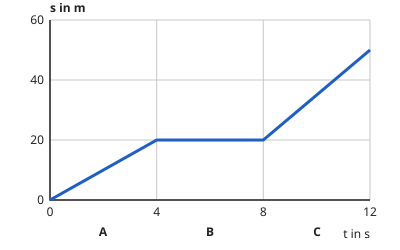

Das Weg-Zeit-Diagramm lesen
Mit einem KI-Tutor lernen
Ein KI-Tutor erklärt dir diese Seite und hilft dir bei den Übungen. Wähl deinen Assistenten:
Mit Claude öffnen Mit ChatGPT öffnen Mit Mistral Vibe öffnen
Du nutzt dein eigenes Konto beim Anbieter. Der Assistent ist kein Angebot von lernapps.net: lernapps liefert nur Inhalte und Übungen. Die Wahl gilt für alle Seiten, nur auf diesem Gerät.
Von der Fahrt zur Linie
Du kennst aus Klasse 7: Wer in 4 s genau 20 m weit kommt, fährt mit 5 m/s. Mit einer einzigen Rechnung beschreibst du aber nur ein Stück der Fahrt. Wie sieht die ganze Fahrt aus, mit Anfahren, Stehen und Weiterfahren? Dafür gibt es das Weg-Zeit-Diagramm: Es zeigt für jeden Zeitpunkt, wie weit das Auto schon vom Start entfernt ist.
So liest du das Diagramm
- Weg-Zeit-Diagramm
Ein Weg-Zeit-Diagramm zeigt für jeden Zeitpunkt den Weg , den ein Körper seit dem Start zurückgelegt hat. Die Zeit liegt auf der waagerechten Achse, der Weg auf der senkrechten.

Das Ganze ist die Fahrt von 12 s. Die Linie zeigt zu jedem Zeitpunkt den Weg vom Start. Achte darauf, ob die Linie steigt oder waagerecht verläuft.
Quelle: eigene Zeichnung. Lizenz: CC-BY-4.0.Die Linie ist kein Bild der Straße. Sie zeigt nicht, ob das Auto bergauf, bergab oder um die Kurve fährt. Sie zeigt nur, wie weit es zu jedem Zeitpunkt vom Start entfernt ist. Steigt die Linie, wird der Weg größer: das Auto fährt. Verläuft sie waagerecht, ändert sich der Weg nicht mehr: das Auto steht.
Ausprobieren im Bewegungslabor
Im Labor besteht die Fahrt aus drei Abschnitten von je 4 s. Mit jedem Regler stellst du die Geschwindigkeit eines Abschnitts ein, die Linie im Diagramm folgt. Die Achsen bleiben dabei an ihrem Platz. Mit der Messmarke wählst du einen Zeitpunkt und liest dafür den Weg ab. Zu Beginn fährt das Auto in allen Abschnitten gleich schnell, die Linie ist eine Gerade. Verändere einen Regler und beobachte, wie sich die Linie in genau diesem Abschnitt neigt: Was ändert sich, wenn die Geschwindigkeit größer wird? Und bei 0 m/s?
Messmarke: Bei t = 6 s ist der Weg s = 24 m.
Das Bewegungslabor zeigt ein Weg-Zeit-Diagramm einer Fahrt von 12 s in drei Abschnitten von je 4 s. Mit einem Regler je Abschnitt stellst du die Geschwindigkeit von 0 bis 12 m/s ein. Beispiele:
- Geschwindigkeiten 4, 4 und 4 m/s: nach 4 s sind es 16 m, nach 8 s 32 m, nach 12 s 48 m.
- Geschwindigkeiten 6, 0 und 3 m/s: nach 4 s sind es 24 m, nach 8 s 24 m, nach 12 s 36 m.
- Geschwindigkeiten 2, 8 und 12 m/s: nach 4 s sind es 8 m, nach 8 s 40 m, nach 12 s 88 m.
Eine größere Geschwindigkeit macht die Linie im Abschnitt steiler, bei 0 m/s verläuft sie waagerecht.
Die Steigung ist die Geschwindigkeit
Eine Radfahrt, zwei Messwerte
Bei s ist ein Rad 10 m vom Start entfernt, bei s sind es 30 m. Wie schnell fährt es zwischen den beiden Zeitpunkten?
| Zeitpunkt | Weg |
|---|---|
| 2 s | 10 m |
| 6 s | 30 m |
Du teilst, wie weit die Linie nach oben geht, durch die Zeit, die dafür vergeht. Das ist die Steigung der Linie. Im Weg-Zeit-Diagramm ist die Steigung die Geschwindigkeit: Je steiler die Linie, desto schneller die Fahrt.
Übung
Übung
Lösung
Abschnitt A
In A kommt das Auto in 4 s 20 m weit, das sind 5 m/s. In C schafft es 30 m in 4 s, das ist mehr.
Abschnitt B
In B verläuft die Linie waagerecht, der Weg ändert sich nicht: Das Auto steht.
Abschnitt C richtige Antwort
In C steigt die Linie am steilsten: 30 m in 4 s sind 7,5 m/s.
Je steiler die Linie im Weg-Zeit-Diagramm, desto größer ist die Geschwindigkeit. In C ist sie am steilsten.
Mehr dazu:
Übung
Lösung
Richtige Antwort: Die Aussage stimmt nicht.
Das Diagramm ist kein Bild der Straße. Eine steigende Linie heißt nur: Der Weg vom Start wird größer, das Auto fährt. Ob die Straße eben ist oder ansteigt, steht nicht im Diagramm.
Mehr dazu:
Übung
Lösung
Richtige Antwort: 5 m/s
Weg durch Zeit: 20 m : 4 s = 5 m/s. Die Linie hat dann nach 4 s die Höhe 20 m.
Mehr dazu:
Übung
Drei Beispielaufgaben, jede mit ihrer Lösung:
Aufgabe Nr. 1
Im Weg-Zeit-Diagramm eines Rads liegt ein Punkt der Linie bei 6 s und 40 m, der nächste bei 8 s und 70 m. Wie schnell fährt das Rad zwischen den beiden Punkten in m/s?
Tipp
Wie weit kommt das Rad zwischen den Punkten, und wie lange braucht es dafür?
Lösung
- Weg zwischen den Punkten: 70 m − 40 m. Zeit dazwischen: 8 s − 6 s.
- , also 15 m/s.
Richtige Antwort: 15 m/s
Aufgabe Nr. 2
Im Weg-Zeit-Diagramm eines Rads liegt ein Punkt der Linie bei 2 s und 30 m, der nächste bei 12 s und 150 m. Wie schnell fährt das Rad zwischen den beiden Punkten in m/s?
Tipp
Wie weit kommt das Rad zwischen den Punkten, und wie lange braucht es dafür?
Lösung
- Weg zwischen den Punkten: 150 m − 30 m. Zeit dazwischen: 12 s − 2 s.
- , also 12 m/s.
Richtige Antwort: 12 m/s
Aufgabe Nr. 3
Im Weg-Zeit-Diagramm eines Rads liegt ein Punkt der Linie bei 4 s und 30 m, der nächste bei 12 s und 150 m. Wie schnell fährt das Rad zwischen den beiden Punkten in m/s?
Tipp
Wie weit kommt das Rad zwischen den Punkten, und wie lange braucht es dafür?
Lösung
- Weg zwischen den Punkten: 150 m − 30 m. Zeit dazwischen: 12 s − 4 s.
- , also 15 m/s.
Richtige Antwort: 15 m/s